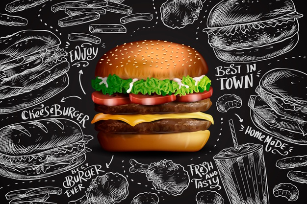

We usually don’t skip fast food meals, ever since we took our first bite on it, we always tend to keep
on eating very often. Just how rice and dal has been the staple diet in our life so fast food has also
become our need whenever it comes to dining in any restaurant. As one of the best fast food
restaurants in Mumbai, Shalimar restaurant leaves no stones unturned in fulfilling your hungry
stomach and desire to munch on fast food items. In today’s busy times we and our families often
need a quick meal to fill our hungry stomachs. that often means stopping for a fast food outlet or
restaurant. Our restaurant is often regarded as the best fast food restaurant around Mumbai
because we offer quick, delicious and tasty fast food.
We have been serving fast food since decades and if you are having a jam-packed schedule, you just need
to head down to our fast food corner. We will make sure that you get a chersihable experience. Our
restaurant offers all fast food meals at affordable prices. That means If you are also struggling with
money, then having access to our best fast food restaurant in Mumbai can be a life saver!
How Shalimar Fast Food is considered the best fast food restaurant in
Mumbai?
Quick meals and exceptional service has made us as one of the best. We cover all range of fast food
items like Sandwiches. Pizzas, Burgers, Non-veg Starters, Lebanese Cuisine. In addition to this all our
items are at reasonable rates so that you don’t feel burden on your pockets.
Shalimar offers four to five types Shalimar Fast Foods :
Sandwiches
Chicken Cub sandwich is an excellent recipe stuffed with chicken, mayonnaise,
processed cheese.
Sandwiches
Sandwiches
Since childhood days we have all loved sandwiches. It is always a delight to
have a sandwich be it at your home or anywhere else. Sandwiches are the last
option if we don’t have anything to order on the menu list. We can’t skip
this fast food as it rules our hearts.
Types Of Sandwiches:
Chicken Tandoori Mix Grill Club Sandwich
Chicken Tandoori Mix Grill Club Sandwich
Chicken Cub sandwich is an excellent recipe stuffed with chicken,
mayonnaise, processed cheese. It is made with layers of tandoori, juicy
tomatoes, hard boiled eggs, lettuce. But all this is quickly made and is
ready for your breakfast, lunch or snack.
Chicken Sandwich
Chicken Sandwich
A plain quick chicken sandwich that is made within 10 minutes. It
stuffed with mix of veggies, mayo and lettuces. Every bite of our plain
chicken sandwich will be a taste that you can’t resist.
Veg Grilled
Veg Grilled
A buttered sandwich with slices of potatoes, tomatoes, cucumber,
capsicum and onions. Grilled and serves in plate with loads of sauce.
Having this sandwich at our place will be tongue-licking treat for you.
Chicken and cheese grilled sandwich
Chicken and cheese grilled sandwich
These are one of the most addictive sandwiches, each slice of bread is
layered with cheese slices. Chicken. Onions and mayo to get a crunchy
taste.
Russian Salad Sandwich
Russian Salad Sandwich
this sandwich is the most colourful, simple and tasty sandwich. We make
by adding some mayo on each slices of breads with lettuce and mix
veggies. All this is done to give you the original Russian taste of
sandwich.
Rolls
A chicken spring roll is a tasty appetizer which is a mix of finely chopped
vegetables.
Rolls
Rolls
Our rolls are quick, delicious and are made in few minutes. We use one
of the best flours for our rolls to go easy on your stomachs. And we
make a variety of rolls are in both Chicken and Veg.
Types Of Rolls :
Chicken Spring roll
Chicken Spring roll
a chicken spring roll is a tasty appetizer which is a mix of finely
chopped vegetables. Minced chicken, onions and some seasoning.
Butter Chicken roll
Butter Chicken roll
These rolls are made crispy with shredded chicken, butter, onions,
green chilies and egg whites.
Chicken mayo roll
Chicken mayo roll
Made with tandoori masala chicken, mayonnaise, green chutney and
seasoned with pepper. It is very tasty and delicious.
Veg Spring roll
Veg Spring roll
A plain spring roll which is made with a mix of veggies, onions.
Seasoned with flavours to delight you on every bite.
Veg mayo roll
Veg mayo roll
A tasteful veg mayo roll that is stuffed with a combination of
veggies and mayonnaise. They are healthy and delicious.

Burgers
Our chicken and cheese burger is a delicious combination of chicken and cheese.
Burgers
Burgers
You might be able to have a tasty burger at a burger joint like
McDonald or any other place, but ones that you will find at our
place will be good burger that is tasty, well balanced. The chicken
and meat are well grounded so you don’t have to do much chewing. And
it is served in a perfect bun, that’s easy to eat.
Types Of Burgers :
Chicken and cheese burger
Chicken and cheese burger
Our chicken and cheese burger is a delicious combination of
chicken and cheese. The cheese oozing out will always allure you
to grab a bite and indulge in the goodness of this tasty burger.
Mutton and Cheese burger
Mutton and Cheese burger
Our mutton and cheese burger is delicious snack that can be
relished by all age groups. well-grounded meat is used, onions
and some interesting ingredients.
Veg and cheese burger
Veg and cheese burger
Stuffed with veg patty that has mixture of vegetables like
potato, cucumber, cabbage, cauliflower. Added with a cheese
slice or spread with cheese.
Chatpata Chat
Our Chatpata chaats are savoury snacks made with aromatic spices that are tangy,
salty or sweet and are mouth-watering.
Chatpata Chat
Chatpata Chat
Our Chatpata chaats are savoury snacks made with aromatic spices
that are tangy, salty or sweet and are mouth-watering. We use
various ingredients that typically creates a spicy and tangy
flavour. All these unique savouring treats make us the best fast
food restaurant in Mumbai.
Types Of Chatpata Chat :
Chicken and cheese burger
Our chicken and cheese burger is a delicious combination of
chicken and cheese. The cheese oozing out will always allure
you to grab a bite and indulge in the goodness of this tasty
burger.
Dahi Wada
Our dahi wada treats are melt in mouth snacks that will be a
delight to eat every bite of it.
Aloo tikki Chaat
We make the best traditional aloo tikki chaat with spicy
lip-smacking chutney, finely diced onions, tomatoes and
potato patties.
Mix Chaat
A very tasty and mouth watering chaat that is made with
smashed potatoes and savoured with flavours. It is an all
time favourite chaat at our fast food restaurant.
Chicken and cheese burger
Our chicken and cheese burger is a delicious combination of
chicken and cheese. The cheese oozing out will always allure
you to grab a bite and indulge in the goodness of this tasty
burger.
Papdi Chaat
Our papdi chaat is spicy as well as sweet and it is made
with a combination of useful ingredients. This makes it a
healthy snack option.
Chicken and cheese burger
Our chicken and cheese burger is a delicious combination of
chicken and cheese. The cheese oozing out will always allure
you to grab a bite and indulge in the goodness of this tasty
burger.
Dhaniya Aloo
Our dhaniya aloo chaat is a dry aloo chaat cooked with
coriander masala, potatoes and aromatic spices.
Sev Puri
Sev puri is sweet, spicy and tangy treat that is served in
crisp puri’s. topped with onions, potatoes and a variety of
sweet and tikka chutney that makes it a really tasty snack.
Chicken and cheese burger
Our chicken and cheese burger is a delicious combination of
chicken and cheese. The cheese oozing out will always allure
you to grab a bite and indulge in the goodness of this tasty
burger.
Dahi Sev Puri
Our Dahi sev puri is also sweet, sour, spicy and tangy snack
that is savoured with dahi.
Paani Puri
A mouth-watering spicy, tangy and sweet chaat served with
crisp puri.
Dahi batata Puri
Our dahi batata puri is very similar to our sev puri but is
filled with yogurt, ragada and topped with chutneys. Ragada
is made with a combination of smashed potatoes and spices.
Dahi Kachori
We make the best dahi kachori chaat and is also the most
loved chaat recipe in our lists. It is well cooked with
flavoured mixture of moong dal served in crisp and crust
puri’s.
Samosa
Our samosa is deep fried pastry made with savoured filling
of potatoes, spices, peas and onions and lentils. It is also
our most popular snack and appetizer at our fast food
restaurant.
If there is one place in Mumbai where you can devour all types of fast food items, it’s this 5
decades old
establishment. Shalimar Restaurant serves all these yummy delicious fast food and snack items.